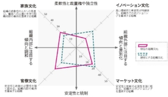

アンケートに回答し、
自分に合った組織文化特性を知る
問題意識
企業にとって若手人材の確保とその定着は、事業の継続・発展を考える上で最も重要な課題の一つです。北海道ではもともと建設業やIT分野を中心に人材不足感がありましたが、若年層の道外流出にも歯止めがかかっておらず、優れた若手人材の「確保」はますます重要になっています。 また、大卒生で３割程度と言われる３年以内離職率も横ばい傾向にあり、若手人材の「定着」もまた重大な課題となっています。本プロジェクトはこのような問題意識に基づき、学術的な理論的検討と調査・分析に基づいた解決策を構築し、それを実施しようとする取り組みです。
大学生
自分の個性に合った
雰囲気の職場を見つける
企業
自社組織の雰囲気に
適合する人材に出会う
問題意識
北海道における人材確保問題
企業にとって若手人材の確保とその定着は、事業の継続・発展を考える上で最も重要な課題の一つです。北海道ではもともと建設業やIT分野を中心に人材不足感がありましたが、若年層の道外流出にも歯止めがかかっておらず、優れた若手人材の「確保」はますます重要になっています。 また、大卒生で３割程度と言われる３年以内離職率も横ばい傾向にあり、若手人材の「定着」もまた重大な課題となっています。本プロジェクトはこのような問題意識に基づき、学術的な理論的検討と調査・分析に基づいた解決策を構築し、それを実施しようとする取り組みです。
大学生
自分の個性に合った
雰囲気の職場を見つける
大学生と企業をつなぐ
プロジェクト
企業
自社組織の雰囲気に
適合する人材に出会う
採用時のマッチングを適切化
人材確保に向けた取り組みとして、採用（就活）段階でのマッチングの適切化が重要だと考えられます。企業が求める人材像と学生の志望が合致すれば採用（内定）に至るわけですが、これには課題もあります。 特に、企業が自社の求める人材像や能力等を厳密に定義することは簡単ではなく、若手就業希望者（就活生）もまた自身のやりたい仕事が明確に見えているわけではありません。その結果、就業条件（地域や職種）や待遇などの客観的情報が強調されることも多く、これでは規模も大きく知名度も高い大企業のみが有利になってしまいます。 実は、大学生などの就活生は「職場の雰囲気・人間関係」を思ったよりも重視します。企業側も職場の雰囲気に言及することは少なくないと思われますが、そもそも人によって異なる志向性のあるこのような条件を訴求することは簡単ではありません。
採用時のマッチングを適切化
人材確保に向けた取り組みとして、採用（就活）段階でのマッチングの適切化が重要だと考えられます。企業が求める人材像と学生の志望が合致すれば採用（内定）に至るわけですが、これには課題もあります。 特に、企業が自社の求める人材像や能力等を厳密に定義することは簡単ではなく、若手就業希望者（就活生）もまた自身のやりたい仕事が明確に見えているわけではありません。その結果、就業条件（地域や職種）や待遇などの客観的情報が強調されることも多く、これでは規模も大きく知名度も高い大企業のみが有利になってしまいます。 実は、大学生などの就活生は「職場の雰囲気・人間関係」を思ったよりも重視します。企業側も職場の雰囲気に言及することは少なくないと思われますが、そもそも人によって異なる志向性のあるこのような条件を訴求することは簡単ではありません。
学術的な指標で「職場の雰囲気」を測る
この「職場の雰囲気」はいわゆる組織文化に近似する概念だと考えられますが、実はこの組織文化特性は学術的に測定することが可能（Cameron
and Quinn,
2009）で、これに基づく企業と学生のマッチングも実現することができます。そこで、本プロジェクトでは企業の組織文化特性を測定（経営者や採用担当者等を対象とする10分程度のアンケート）し、それを学生に提示することにより道内企業へ注目するきっかけ作りとなるプログラムを構築することにいたしました。
学生も自身の志向する組織文化特性を明確化するためのアンケートに回答し、この結果と企業の組織文化特性を照らし合わせることで、最も近い企業を提示します。プログラムはWebサイト上で展開され、不特定多数の学生が参加できるようにするとともに、企業向けにも広く参加を呼びかけます。
学術的な指標で「職場の雰囲気」を測る
この「職場の雰囲気」はいわゆる組織文化に近似する概念だと考えられますが、実はこの組織文化特性は学術的に測定することが可能（Cameron
and Quinn,
2009）で、これに基づく企業と学生のマッチングも実現することができます。そこで、本プロジェクトでは企業の組織文化特性を測定（経営者や採用担当者等を対象とする10分程度のアンケート）し、それを学生に提示することにより道内企業へ注目するきっかけ作りとなるプログラムを構築することにいたしました。
学生も自身の志向する組織文化特性を明確化するためのアンケートに回答し、この結果と企業の組織文化特性を照らし合わせることで、最も近い企業を提示します。プログラムはWebサイト上で展開され、不特定多数の学生が参加できるようにするとともに、企業向けにも広く参加を呼びかけます。

マッチングまで
大学生
01
アンケートに回答し、 自分に合った組織文化特性を知る
02
Webサイト上で自分の志向する組織文化特性にマッチした企業を 検索・情報提供を受ける
03
興味のある適合企業については、さらに詳しい情報提供（企業情報の提供や企業Webサイトへのリンク）
04
自分の組織文化（雰囲気）志向に合った企業を見つけ、応募（エントリー）を検討することができる
企業
01
アンケートに回答し、 自社の組織文化特性を明確化
02
Webサイト上で組織文化特性が提示され、志向が適合する大学生へ自社情報を提供（マッチング）
03
自社組織の雰囲気に合った人材のエントリーや応募（エントリー）へとつながる

―組織文化特性のチャート提示例（企業）―
マッチングまで
学生
企業
01
02
Webサイト上で自分の志向する組織
文化特性にマッチした企業を
検索・情報提供を受ける
03
興味のある適合企業については、さ
らに詳しい情報提供（企業情報の提
供や企業Webサイトへのリンク）
04
自分の組織文化（雰囲気）志向に合った
企業を見つけ、応募（エントリー）を
検討することができる
01
アンケートに回答し、
自社の組織文化特性を明確化
02
Webサイト上で組織文化特性が提示
され、志向が適合する大学生へ
自社情報を提供（マッチング）
03
自社組織の雰囲気に合った人材のエ
ントリーや応募（エントリー）へと
つながる
―組織文化特性のチャート提示例（企業）―